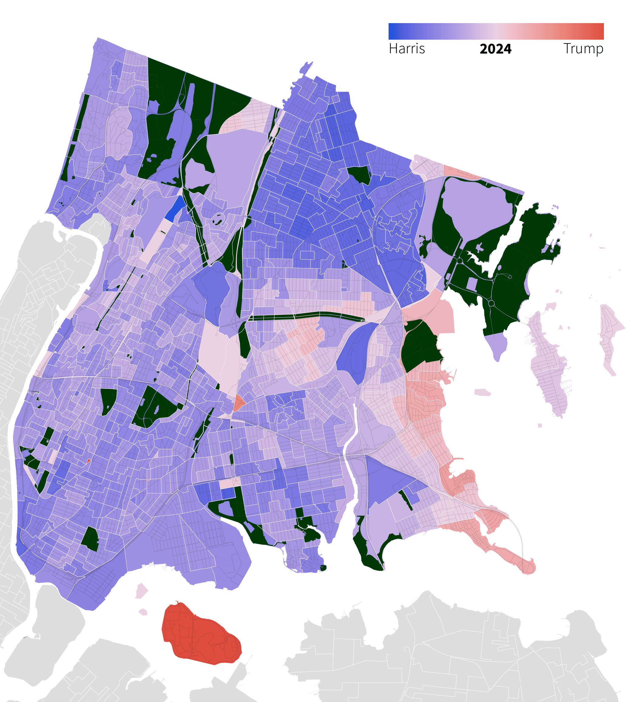
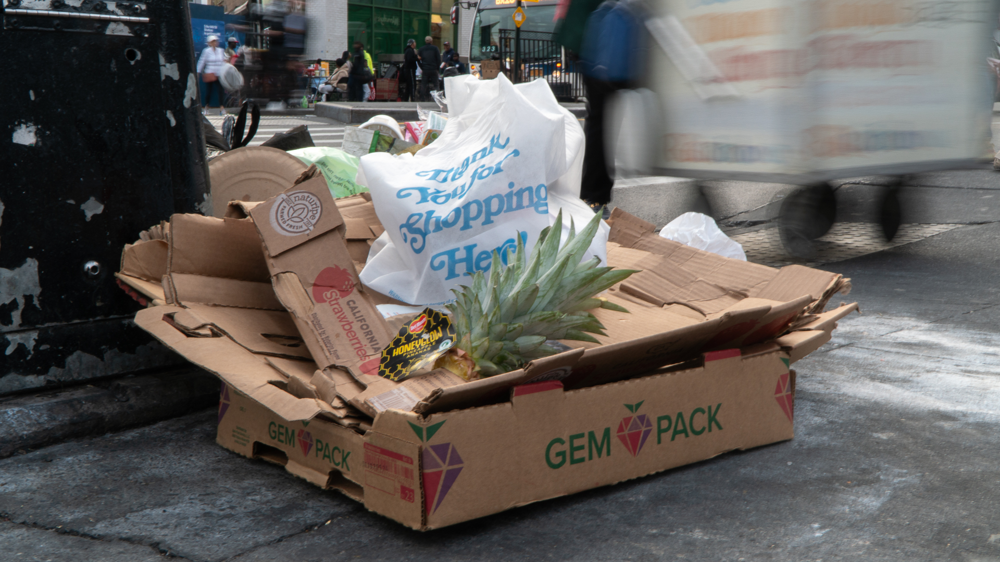
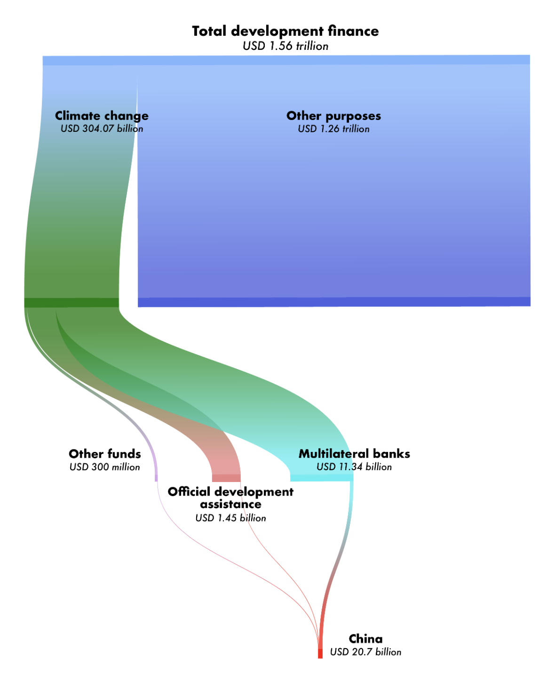

Personal project Aftershocks | Shifting voting patterns: Trending towards purple
Elections • Python, GIS

Mott Haven Herald BID wants more cameras in The Hub to curb illegal dumping
Local Accountability • Python, GIS • Multimedia

Philippine Center for Investigative Journalism Down the drain: What happened to Comelec’s ₱1B voter verification project?
Elections • Government Procurement

ABS-CBN Fedelina: A Stolen Life
Trafficking • Cross-border • Documentary

Philippine Center for Investigative Journalism Verde Island Passage in danger as LNG projects flock to Batangas
Environment • Climate • Energy Transition • Multimedia

Philippine Center for Investigative JournalismPandemic underscores struggles of Manila’s urban poor communities without access to clean water
Health • Multimedia

Philippine Center for Investigative Journalism OFWs are harassed — Jessica got jail time — over loans they’re forced to make to get jobs abroad
Labor and Migration • Cross-border

ABS-CBN HIV Rising
Health • Cross-border

Philippine Center for Investigative JournalismOnline child sex abuse surges during pandemic
Trafficking • Digital Crime • Multimedia

Philippine Center for Investigative JournalismMarcos leads presidential race amid massive disinformation
Elections • Disinformation • Multimedia

Personal project China, a top lender, still receives billions in aid
Development Finance • Python, Scrollama